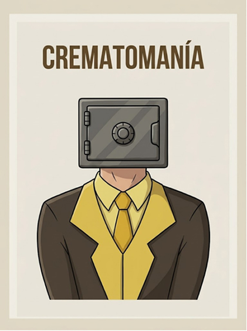
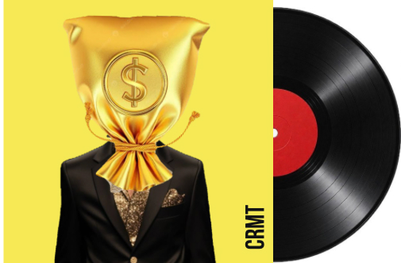
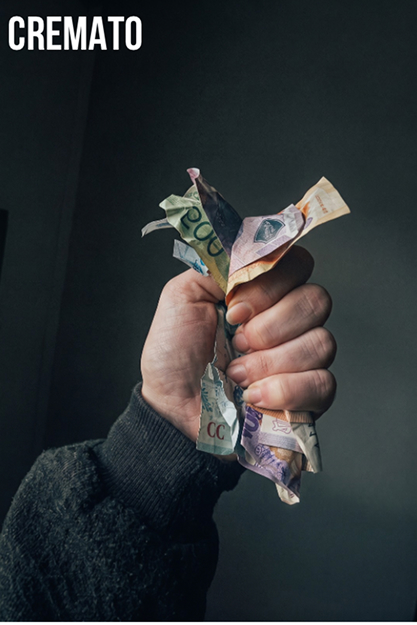

01. ADICCIÓN DOPAMINÉRGICA
El cerebro libera dopamina al acumular capital, generando un ciclo constante de ansiedad y dependencia.
La obsesión desmedida por la acumulación y valor del dinero en la sociedad.
Explorar ObsesiónEs la atracción desmedida y compulsiva por acumular dinero. Para quien la padece, el dinero deja de ser una herramienta para vivir y se convierte en el único objetivo de su existencia, midiendo su propio valor según cuánto posee.
El cerebro libera dopamina al acumular capital, generando un ciclo constante de ansiedad y dependencia.
Los objetos de lujo y la ostentación reemplazan la identidad personal y condicionan los vínculos sociales.
El miedo permanente a perder lo acumulado produce aislamiento emocional e insatisfacción crónica.
Venta de Set de Cremato: El libro oficial de Cremato, un vinilo (incluye un podcast) y un afiche representativo.



Datos de impacto psicológico y social de la crematomanía en la era digital.
De las personas con conductas de acumulación compulsiva reporta ansiedad severa ante la pérdida de capital.
De reducción en vínculos interpersonales estables al priorizar el rendimiento económico sobre las relaciones.
De incremento en la exhibición de lujo y estatus monetario en redes sociales durante la última década.